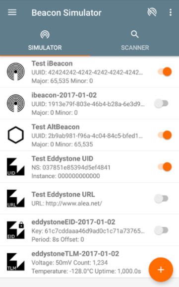
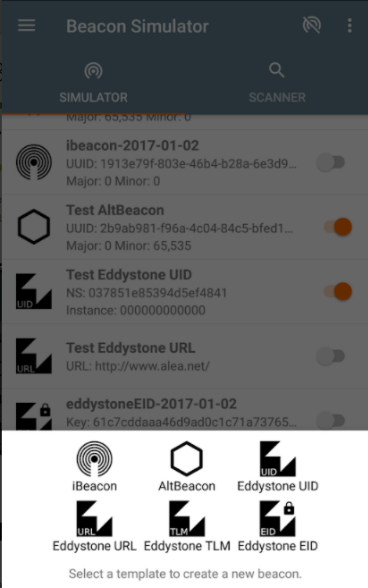

Set Simulation Environment
The application developer receives SDK and a companion sample app which integrates the SDK. However, in order for the sample app to return point of interest ID, there must be a BLE beacon present and configured correctly with the parameters in the table below:
| Paramter | Value |
|---|---|
| Protocol | iBeacon |
| UUID | D2C56DB5-DFFB-48D2-B060-D0F5A71096EE |
| Major | 5 |
| Minor | 402 |
| Tx Power | -65 |
In the likely event that the application developer does not have a physical beacon, then one of many simulator beacon tools can be used. Below is an example of such a tool and the steps used to configure this tool with the above parameters.
-
Download the following app from the Android play store (Apple alternatives exist):

- Add new simulated beacon:
 
Now the beacon has been correctly configured, we are ready to build a simulation scenario leveraging this beacon(s). Below is the sample deployment configure in the sample app provided. There are six points of interest. You will require a beacon configuration as shown in the figure below per PoI. To test all PoIs concurrently, we will need as many beacon simulators as PoIs. However, we can setup lesser number than the maximum provided as long as we still that the minor and major values are configured as in the figure below.
Adjusting the separation distance between the PoIs is likely to show how a false trigger actually may happen. Smaller distances will increase the probability of a false trigger and will result in a PoI having lesser certainty number returned by the SDK.